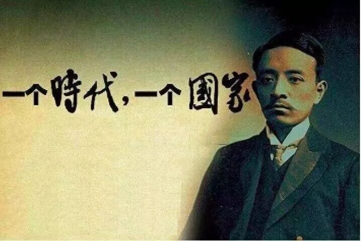
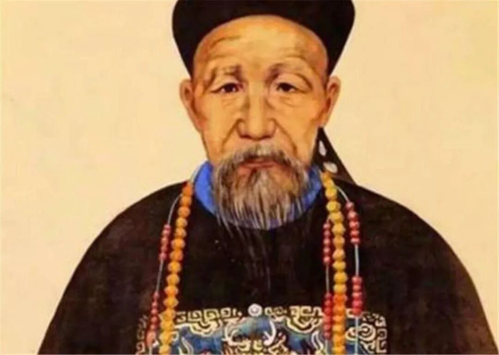

【行者无疆 言念潇湘】精品文化科普（二）

挥毫当得江山助，不到潇湘岂有诗？
你可以不知道她的前世
但你一定知道她的绝美秀丽
你可以不知道她的今生
但你一定知道她的天生才子
你可以不知道她的未来
但你一定知道她的人间美味
翻开纸页，静静品读
潇湘文化亦在其间慢慢隐现
“名山高耸入云端，奇峰异石迷人眼。”张家界以峰称奇、以谷显幽、以林见秀，奇绝的石英砂岩大峰林让人向往，丰富的动植物资源也令人赞叹。
开发旅游资源的同时，国家也在保护这里的一草一木，让张家界成为中华民族永恒的宝藏。

长沙市的湘江中心，橘子洲由南至北，横贯江心，西望岳麓山，东临长沙城，绵延十多里。
1925年秋，毛泽东在此处写下《沁园春·长沙》，从此橘子洲声名大振。
湖南省博物馆是湖南省最大的历史艺术类博物馆，馆藏有曲裾素纱褝衣、御龙帛画等珍贵文物。
博物馆以保护、传承优秀历史文化为己任，不仅是长沙市的文化地标，还是人们了解湖湘文明进程、领略湖湘文化奥秘的重要窗口。

字得尊，湖南省常德市人。中国近代革命先驱者之一，被孙中山誉为“公真第一人”。
宋教仁在两湖新军之间鼓动革命，促进武昌起义成功；革命成功后又以三权分立为基础，亲手制定国家法律，被称为“中国宪政之父”。
字崇文，出生于湖南凤凰，是现代中国文学最伟大的印象主义者。
创作风格趋向浪漫主义，语言格调古朴，句式简峭、主干突出，具有独特的风韵与神采。著有《边城》、《湘西》等在国内外有重大影响的文学作品。

湖南省长沙府湘乡县人，清朝中兴名臣，是中国历史上最有影响的人物之一。
他博览历史，重视理学，洁己奉公，具有独特的处世哲学和政治观点，为一代青年之榜样，毛泽东有言“愚于近人，独服曾文正。”
湖南传统名菜，源于湖南省东安县，是国宴菜谱之一、八大湘菜之首。
以七成熟鸡肉条加调料炒制而成，色泽鲜艳，肉质鲜嫩，酸辣爽口，肥而不腻。
辣椒炒肉是一道深入湖南人骨髓的家常菜，色泽鲜艳，瘦肉嫩滑、咸香可口，非常开胃、下饭，传统又经典，百吃不腻，
“无椒芥不下箸，嗜椒三百年”，辣椒炒肉则是辣椒最简单完美的体现。
湖南一绝名菜，经三十多种名贵中药浸泡，10余种香料、经过风干、烤制等15道工序精致而成。
皮肉酥香，酱香浓郁，醇香可口，低脂不腻，回味无穷，是风靡大江南北的一种风味美食。

合上纸卷，古香扑面，余韵悠长
忆往昔峥嵘岁月，正当下伟岸身姿
愿踏遍潇湘之地，
领略壮丽美景，感受独特文化
在一山一水间，一字一墨间
追寻其中的悠悠神秘
窈窕潇湘，寤寐求之

来源 | 行者无疆实践团
文字 | 王姿然
排版 | 张清雅
审核 | 段智然 康艳虎
行者无疆实践团
QQ：2758025831

随行者一起认识世界
长按二维码